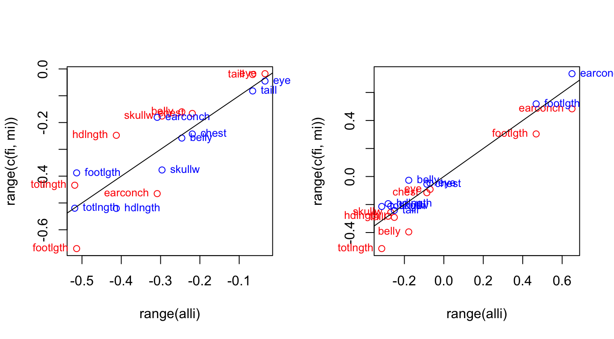
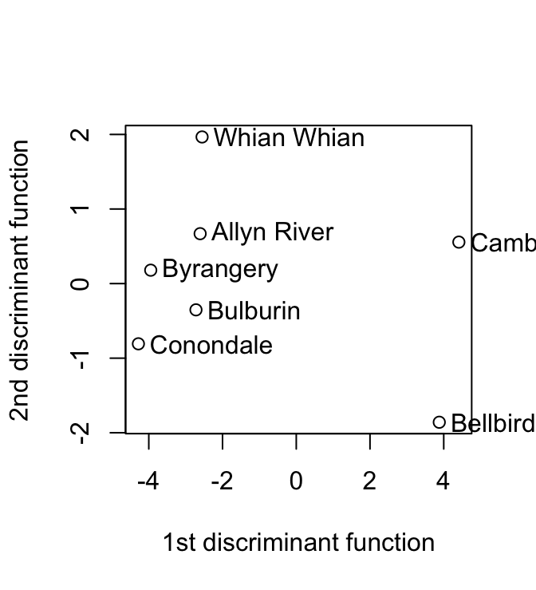
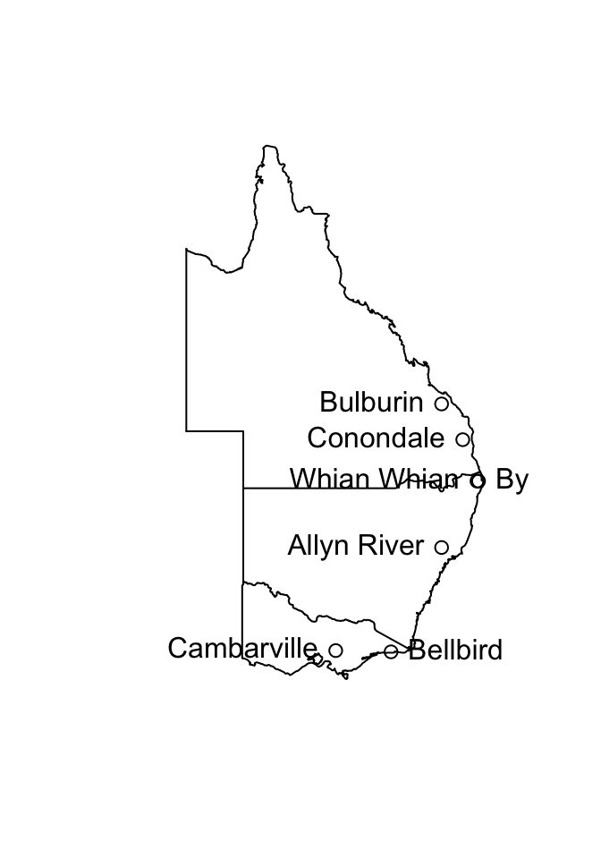
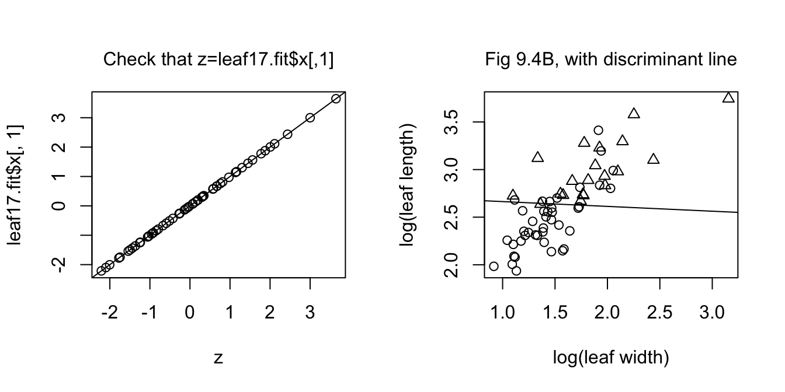

9 Answers to Selected Chapter 9 Exercises
Multivariate data exploration and discrimination
Exercise 1
Carry out the principal components analysis of Subsection 9.1.2, separately for males and females. For each of the first and second principal components, plot the rotations for females against the rotations for all data combined, and similarly for males. Are there any striking differences?
The help page ?loadings explains how the term loadings came to be used, rather than the term rotations that is now regarded as more appropriate in a principal components context.
We do the analysis (i) for all observations; (ii) for females; (iii) for males.
all.pr <- prcomp(na.omit(possum[, -(1:5)]))
femp.pr <- prcomp(na.omit(possum[possum$sex=="f", -(1:5)]))
malep.pr <- prcomp(na.omit(possum[possum$sex=="m", -(1:5)]))One way to compare the separate rotations is to plot each set in turn against the rotations for all observations. We put the code into a function so that we can easily do the plot for each component in turn. The settings for the two elements of signs allow us to switch the signs of all elements, for males and females separately. Rotations that differ only in a change of sign in all elements are equivalent.
compare.rotations <- function(i=1, all.load=all.pr$rotation,
fload=femp.pr$rotation,
mload=malep.pr$rotation, signs=c(1,1)){
alli <- all.load[,i]
fi <- fload[,i]*signs[1]
mi <- mload[,i]*signs[2]
plot(range(alli), range(c(fi, mi)), type="n")
chw <- par()$cxy[1]
points(alli, fi, col="red")
text(alli, fi, lab=row.names(fload), adj=0, xpd=TRUE, col="red",
pos=2, cex=0.8)
points(alli, mi, col="blue")
text(alli, mi, lab=row.names(mload), adj=0, xpd=TRUE, col="blue",
pos=4, cex=0.8)
abline(0,1)
}Now compare the rotations for the first and second principal components. From examination of the results for default settings for signs, it is obvious that a switch of sign is needed for the male rotations.
par(mfrow=c(1,2))
compare.rotations(1) # Compare rotations on 1st pc
compare.rotations(2, signs=c(1,-1)) # Compare rotations on 2nd pc
Rotations for females (red) and rotations for males(blue), plotted against rotations for the total data set.
Exercise 2
In the discriminant analysis for the possum data (Subsection 9.4.4), determine, for each site, the means of the scores on the first and second discriminant functions. Plot the means for the second discriminant function against the means for the first discriminant function. Identify the means with the names of the sites.
We need only omit the rows that have missing values in columns 6-14. (The variable age, in column 4, has two missing values, which are need not concern us.) Hence the use, in the code that follows, of ccases to identify rows that have no missing values in these columns. Here is the code used to do the discriminant function calculations:
suppressPackageStartupMessages(library(MASS))
ccases <- complete.cases(possum[,6:14])
possum.lda <- lda(site ~ hdlngth+skullw+totlngth+ taill+footlgth+
earconch+eye+chest+belly, data=possum[ccases, ])We calculate the means of the scores thus:
possum.fit <- predict(possum.lda)
avfit <- aggregate(possum.fit$x, by=list(possum[ccases, "site"]),
FUN=mean)
round(avfit,2) Group.1 LD1 LD2 LD3 LD4 LD5 LD6
1 1 4.41 0.56 -0.32 -0.17 -0.06 -0.01
2 2 3.88 -1.86 0.54 0.42 0.26 0.02
3 3 -2.61 0.67 -0.54 1.07 -0.52 -0.05
4 4 -2.55 1.97 1.30 0.23 0.57 -0.22
5 5 -3.95 0.18 -0.60 -0.03 0.24 0.40
6 6 -4.28 -0.81 -1.03 -0.23 0.10 -0.30
7 7 -2.72 -0.35 1.10 -0.29 -0.32 0.03The matrix avfit has 7 rows (one for each site) and 6 columns (one for each of the six discriminant functions). The row labels can be obtained from the data frame possumsites. Here then is the plot:
plot(avfit[,"LD1"], avfit[,"LD2"], xlab="1st discriminant function",
ylab="2nd discriminant function")
chw <- par()$cxy[1]
text(avfit[,"LD1"]+0.5*chw, avfit[,"LD2"], labels=row.names(possumsites),
adj=0, xpd=TRUE)
The graph plots of second discriminant function against the first discriminant function, for the possum data frame. The discriminant functions are designed to discriminate between sites.} Cambarville and Bellbird seem distinguised from the other sites.
Exercise 3
The data frame possumsites (DAAG package) holds latitudes, longitudes, and altitudes, for the seven sites. The following code, which assumes that the oz package is installed, locates the sites on a map that shows the Eastern Australian coastline and nearby state boundaries.
library(DAAG); library(oz)
oz(sections=c(3:5, 11:16))
names(possumsites)[1:2] <- c("long", "lat")
with(possumsites, points(long, lat))
chw <- par()$cxy[1]
chh <- par()$cxy[2]
posval <- c(2, 4, 2, 2, 4, 2, 2)
with(possumsites, text(long, lat,
row.names(possumsites), pos=posval))
Do the site means that were calculated in Exercise 2 relate in any obvious way to geographical position, or to altitude?
Cambarville and Bellbird, which were distinguished from the main cluster in the plot in Exercise 2, are the southernmost sites.
Exercise 5
Create a version of Figure 9.15B that shows the discriminant line. In the example of Subsection 9.4.1, investigate whether use of logpet, in addition to logwid and loglen, improve discrimination?
Here are the discriminant function calculations:
leafshape17 <- DAAG::leafshape17
leaf17.lda <- lda(arch ~ logwid + loglen, data = leafshape17)
leaf17.fit <- predict(leaf17.lda)
leaf17.lda$prior 0 1
0.6721311 0.3278689 leaf17.lda$scaling LD1
logwid 0.1555083
loglen 3.0658277leaf17.lda$means logwid loglen
0 1.429422 2.460128
1 1.865537 2.993948The information needed to reconstruct the discriminant function is provided by leaf17.lda$prior, leaf17.lda$means and leaf17.lda$scaling. First we calculate a grand mean, from that the constant term for the discriminant function, and then do a plot (see below) that checks that we are correctly recovering the discriminant function scores. Calculations can be done without matrix multiplication, but are tedious to write down. The following assumes a knowledge of matrix multiplication, for which the symbol is %*%:
gmean <- leaf17.lda$prior%*%leaf17.lda$means
const <- as.numeric(gmean%*%leaf17.lda$scaling)
z <- as.matrix(leafshape17[,c(5,7)])%*%leaf17.lda$scaling - constNote that R distinguishes between a 1 by 1 matrix and a numeric constant. The final two lines are a check that the discriminant function has been correctly calculated. It has the form \(ax+by-c = z\), where the discriminant line is given by \(z = 0\). The equation of the line is then \(y = -a/bx + c/b\). We have
slope <- -leaf17.lda$scaling[1]/leaf17.lda$scaling[2]
intercept <- const/leaf17.lda$scaling[2]We now show the plot that checks that we have correctly recovered the discriminant function scores, with the requested plot alongside.
par(mfrow=c(1,2))
plot(z, leaf17.fit$x[,1]); abline(0,1)
mtext(side=3, line=1, "Check that z=leaf17.fit$x[,1]")
plot(loglen ~ logwid, data=leafshape17, xlab="log(leaf width)",
ylab="log(leaf length)", pch=leafshape17$arch+1)
abline(intercept, slope)
mtext(side=3, line=1, "Fig 9.4B, with discriminant line")
The left panel is a check that calculations are correct. The right panel reproduces Figure 9.4B, adding the discriminant function line.
Exercise 6
*The data set leafshape has three leaf measurements – bladelen (blade length), bladewid (blade width), and petiole (petiole length). These are available for each of two plant architectures, in each of six locations. (The data set leafshape17 that we encountered in Section 12.2.1 is a subset of the data set leafshape.) Use logistic regression to develop an equation for predicting architecture, given leaf dimensions and location. Compare the alternatives: (i) different discriminant functions for different locations; (ii) the same coefficients for the leaf shape variables, but different intercepts for different locations; (iii) the same coefficients for the leaf shape variables, with an intercept that is a linear function of latitude; (iv) the same equation for all locations. Interpret the equation that is finally chosen as discriminant function.
We will work with the variables logwid, loglen and logpet.
leafshape <- DAAG::leafshape
names(leafshape)[4] <- "latitude"
one.glm <- glm(arch ~ (logwid+loglen+logpet)*location,
family=binomial, data=leafshape)Warning: glm.fit: fitted probabilities numerically 0 or 1 occurredtwo.glm <- glm(arch ~ (logwid+loglen+logpet)+location,
family=binomial, data=leafshape)
three.glm <- glm(arch ~ (logwid+loglen+logpet)*latitude,
family=binomial, data=leafshape)
four.glm <- glm(arch ~ (logwid+loglen+logpet)+latitude,
family=binomial, data=leafshape)
anova(four.glm, three.glm, two.glm, one.glm)Analysis of Deviance Table
Model 1: arch ~ (logwid + loglen + logpet) + latitude
Model 2: arch ~ (logwid + loglen + logpet) * latitude
Model 3: arch ~ (logwid + loglen + logpet) + location
Model 4: arch ~ (logwid + loglen + logpet) * location
Resid. Df Resid. Dev Df Deviance Pr(>Chi)
1 281 193.31
2 278 187.78 3 5.530 0.1368635
3 277 186.30 1 1.481 0.2235601
4 262 148.00 15 38.298 0.0008151It may however, in view of uncertainty about the adequacy of the asymptotic chi-squared approximation for the deviance changes, be better to fit the models using lda(), and choose the model that has the smallest cross-validated relative error:
library(MASS)
one.lda <- lda(arch ~ (logwid+loglen+logpet)*location,
CV=TRUE, data=leafshape)
two.lda <- lda(arch ~ (logwid+loglen+logpet)+location,
CV=TRUE, data=leafshape)
three.lda <- lda(arch ~ (logwid+loglen+logpet)*latitude,
CV=TRUE, data=leafshape)
four.lda <- lda(arch ~ (logwid+loglen+logpet)+latitude,
CV=TRUE, data=leafshape)
t1 <- table(leafshape$arch, one.lda$class)
t2 <- table(leafshape$arch, two.lda$class)
t3 <- table(leafshape$arch, three.lda$class)
t4 <- table(leafshape$arch, four.lda$class)
# Pairs of columns will now appear in order 'one', 'two', 'three', 'four'
cbind(t1,t2,t3,t4) 0 1 0 1 0 1 0 1
0 174 18 177 15 179 13 177 15
1 24 70 24 70 22 72 24 70# Calculate leave-one-out cross-validation predictive accuracy estimates
sapply(list(one=t1,two=t2,three=t3,four=t4),
function(x)sum(diag(x))/sum(x)) |> round(2) one two three four
0.85 0.86 0.88 0.86 Note that leave-one-out cross-validation gives the same result each time that the calculation is run. (How so?)
In all four tables, the totals of the rowsums are the totals for the respective architectures. Thus:
## Row sums - numbers for the two architectures
sapply(list(one=t1,two=t2,three=t3,four=t4),
function(x)apply(x,1,sum)) ## Same number each time one two three four
0 192 192 192 192
1 94 94 94 94## Column sums - predicted numbers for the two architectures
sapply(list(one=t1,two=t2,three=t3,four=t4),
function(x)apply(x,2,sum)) ## All are not the same one two three four
0 198 201 201 201
1 88 85 85 85The following improves the labeling when the tables for the four models are shown side by side:
t1 <- table(arch=leafshape$arch, class=one.lda$class)
t2 <- table(arch=leafshape$arch, class=two.lda$class)
t3 <- table(arch=leafshape$arch, class=three.lda$class)
t4 <- table(arch=leafshape$arch, class=four.lda$class)
## Set the four tables side by side
tab1234 <- array(cbind(t1,t2,t3,t4), dim=c(2,2,4),
dimnames=c(dimnames(t1), list(c('one','two','three','four'))))
ftable(tab1234, col.vars=c(3,2)) one two three four
class 0 1 0 1 0 1 0 1
arch
0 174 18 177 15 179 13 177 15
1 24 70 24 70 22 72 24 70